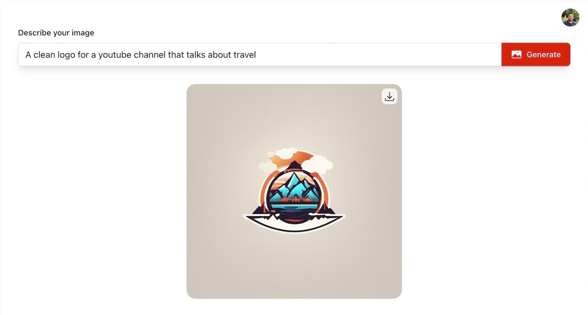
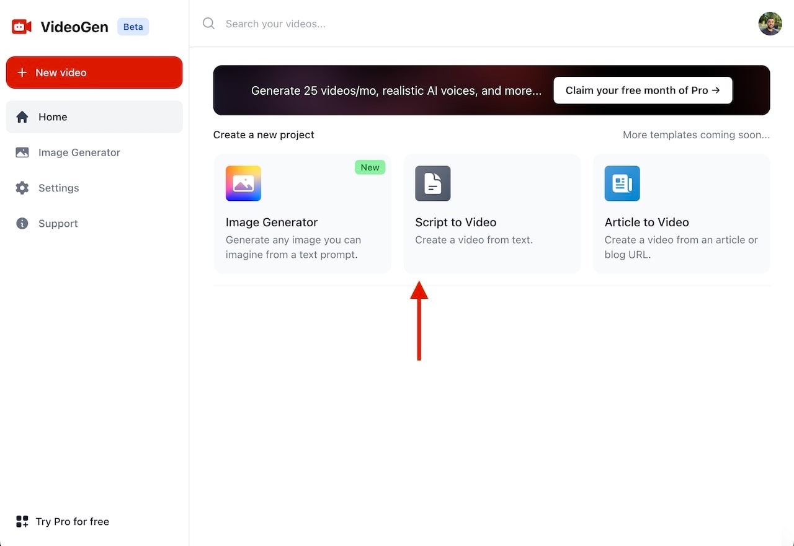
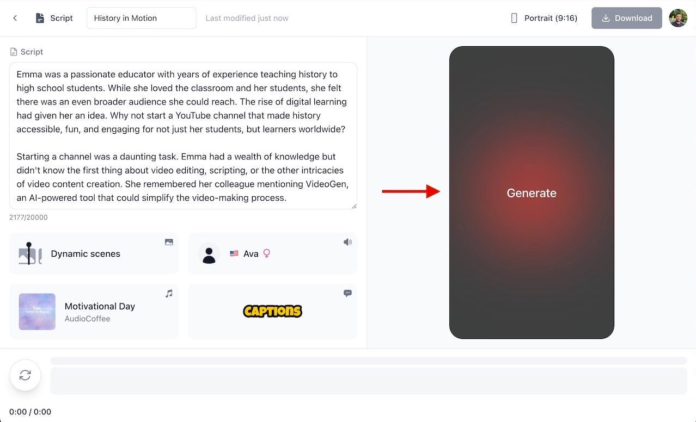

Anton Koenig
Anton Koenig👋 Hey Digital Creators! Want to shine on YouTube without stepping into the limelight? Dive into the world of faceless YouTube channels. Picture this: telling captivating stories without ever showing your face. Better yet, you don’t need to spend any time editing your videos. With the power of AI and a sprinkle of creativity, starting your faceless YouTube channel can be both fun and effortless with this step-by-step guide.

Before diving in, understand your content's direction. Don’t stress! You can always switch it up later.It’s typically a good idea to choose a niche that you’re passionate about. This will make the process more rewarding, and it gives you a chance to share your knowledge and passion with the world.
Here are some popular niches for you to get inspired from:
And the list goes on… the beauty of creating your YouTube channel is that you can cover whatever you want!
Embarking on your YouTube journey begins with a well-branded channel. Here’s how to effectively set up each component:
Channel Name:
Channel Art:

Channel Description:
Laying a solid foundation with your channel setup is pivotal. But remember, content remains king. Once you've established your channel, waste no time and delve into creating captivating content.
Taking that first step can often be the most daunting. But, as the saying goes, "a journey of a thousand miles begins with a single step". When considering starting a faceless YouTube channel in 2024, don't get bogged down by the pressure of perfection. Instead, prioritize action. Here's a guide to help you brainstorm that initial video idea:
Lastly, embrace the iterative process. Your first video doesn't have to be perfect, nor does it have to define your channel's future trajectory. The key is to start. Once you have a video or two under your belt, you'll gain insights from your audience, analytics, and personal experience, allowing you to refine your approach over time. The digital content world is vast, and there's room for every creator to carve out their unique space. So, get brainstorming and take that leap!
A great script is a key for faceless channels. It ensures your content flows smoothly, your message is coherent, and it keeps viewers engaged.
Here’s a quick guide to scripting:
Always remember, a script doesn’t just serve your video’s structure, but it also improves the overall delivery and quality of your content.
In 2024, the best way to create videos is using an AI video generating platform like VideoGen. Here’s why:
VideoGen drastically reduces the time spent on editing and exporting, allowing you to focus on creating videos on a consistent basis. As you grow your channel, this can save you hours upon hours of time.
While more AI-powered video editing platforms will come out in the future, leveraging this early can help you quickly grow your faceless YouTube channel before it becomes harder and more competitive.

Make sure you’re on your computer as VideoGen is currently unsupported on mobile. Sign up for VideoGen to create faceless YouTube videos. Then, select “Script to Video” as your first project.
Once you’re in your project, copy and paste the script you’ve prepared into the text-box on the right.
Choose from VideoGen’s library of royalty-free music. Select an AI voice to narrate your video and set your captions. We recommend including captions to make your videos accessible to viewers without sound.

VideoGen’s AI will analyze your script, choose relevant stock videos, and integrate them seamlessly into the timeline.
Once satisfied, preview your video. If all looks good, export it in your desired resolution and aspect ration.
Upload your video and remember to:
We recommend using a tool like ChatGPT or VideoGen's VideoBot to help brainstorm titles and descriptions for your first video.
Even if you’re faceless, engage with your viewers through comments, polls, and community posts. Building a community around your channel increases its growth and longevity.
Remember, faceless doesn’t mean voiceless. With tools like VideoGen, and passion for your niche, you can build a successful YouTube channel while retaining your privacy. Embrace the journey and happy content creating!
As we wrap up this comprehensive guide on how to start a YouTube channel without showing your face, let's take a moment to reflect on the essence of the journey.
In today's digital world, many content creators grapple with the balance between personal exposure and delivering value-packed content. Going anonymous on YouTube, while initially seeming to go against the influencer grain, is an ingenious way to prioritize message over the messenger. It's not just about maintaining privacy—it's about fostering an alluring sense of mystery that leaves your audience wanting more.
Harnessing modern tools like VideoGen is pivotal in this endeavor. Its user-friendly platform, underpinned by state-of-the-art AI technology, ensures that even those new to the realm of video creation can produce captivating content without showing their face. After all, it's the content that truly speaks to your audience.
So, as you set out on your journey to start your faceless YouTube channel in 2024, remember the core tenet of VideoGen's mission: "Giving Everyone a Voice." It's an important reminder that, even without a visible face, your voice and the content you produce can reverberate far and wide, making a genuine impact. Ready to make your mark? Dive in, use the tools at your disposal, and let your voice be heard in the vast expanse of the digital universe!
Anton Koenig
Co-Founder of VideoGen
Unlock the future of video creation for free with VideoGen.
Anton Koenig Anton Koenig
Anton Koenig Anton Koenig
Anton Koenig Anton Koenig
Anton Koenig Anton Koenig
Anton Koenig